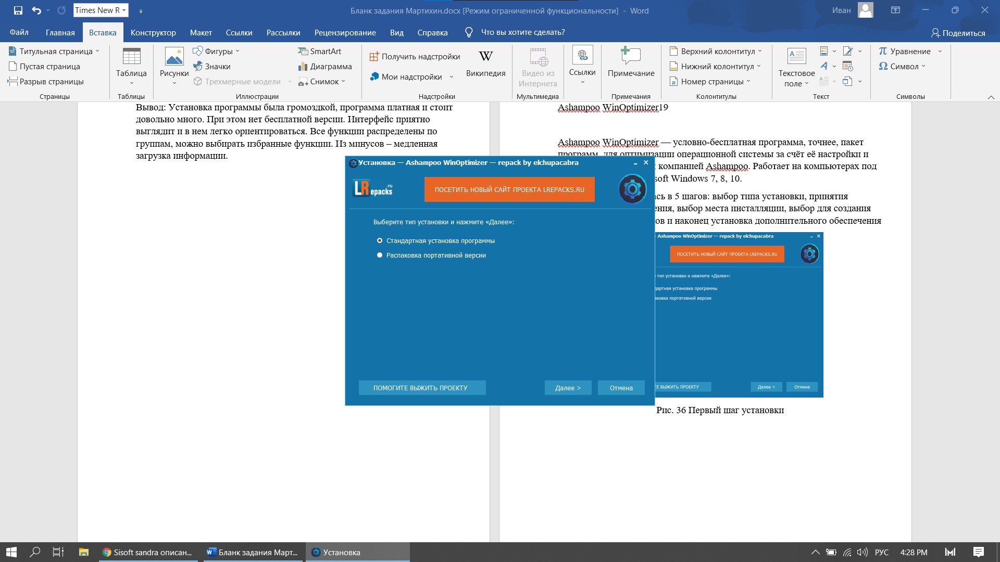
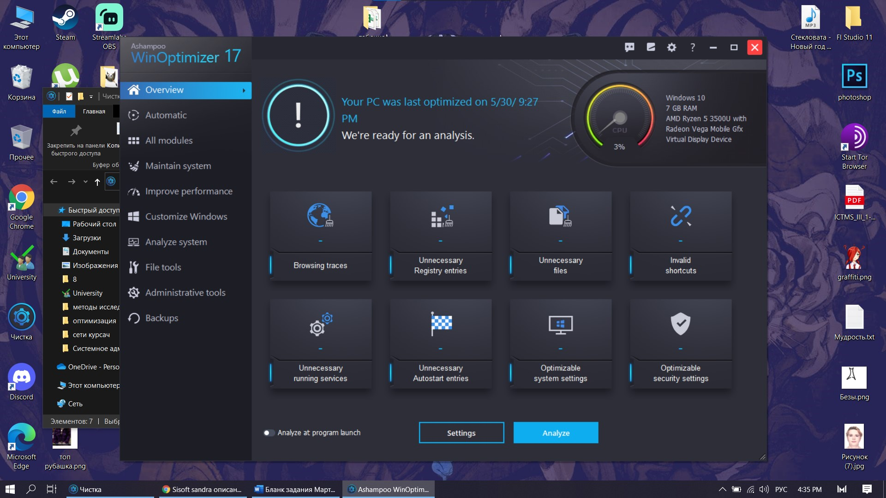
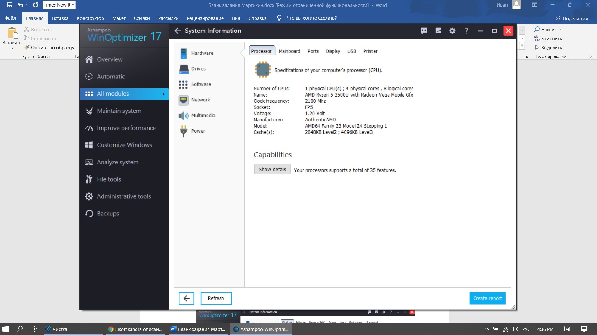

| Ashampoo WinOptimizer — условно-бесплатная программа, точнее, пакет программ, для оптимизации операционной системы за счёт её
настройки и очистки, разработанная компанией Ashampoo. Работает на компьютерах под управлением ОС Microsoft Windows 7, 8, 10.
Установка производилась в 5 шагов: выбор типа установки, принятия лицензионного соглашения, выбор места инсталляции, выбор для
создания дополнительных ярлыков и наконец установка дополнительного обеспечения |
|  |
| Рис. 1 Первый шаг установки |
| Главное меню выглядит запутанно, но нам сразу показывается состояние системы в виде датчика, а также видно, когда в последний раз
проводилась оптимизация пк. Увы все функции системы приведены не на главном окне,
а в меню слева. Но зато можно оптимизировать систему по заранее подготовленному шаблону. |
|  |
| Рис. 2 Главное меню |
| Вкладка «Все модули» - как по мне, то очень удобный модуль. Можно сразу найти в списке нужную программу и нет необходимости лазить
по вкладкам и искать необходимую. Функции разделены на функциональные группы и приведены списком. |
 |
| Рис. 3 Модули программы |
| Все модули по группам также продублированы слева в меню. |
| Далее некоторые функции, например Вывод информации о системе. Она выводится не списком, а по встроенным устройствам нашей машины.
Можно выбрав устройство просматривать по вкладкам дополнительную информацию об устройстве. Где установлено, какие есть ошибки в работе,
сама информация о возможностях и прочее. |
|  |
| Рис. 4 Вывод информации о системе |
 |
| Рис. 5 Вывод информации об ОС |
| Программа также позволяет произвести сохранение системы или же сделать backups. |
| Вывод: удобная установка, немного запутанный интерфейс, но некоторые функции для исправления и настройки системы под себя – это
перекрывают. Нет русского языка. Все функции можно посмотреть на одной вкладке – они все также будут разделены на группы. Информация
о системе выводится максимально быстро. |